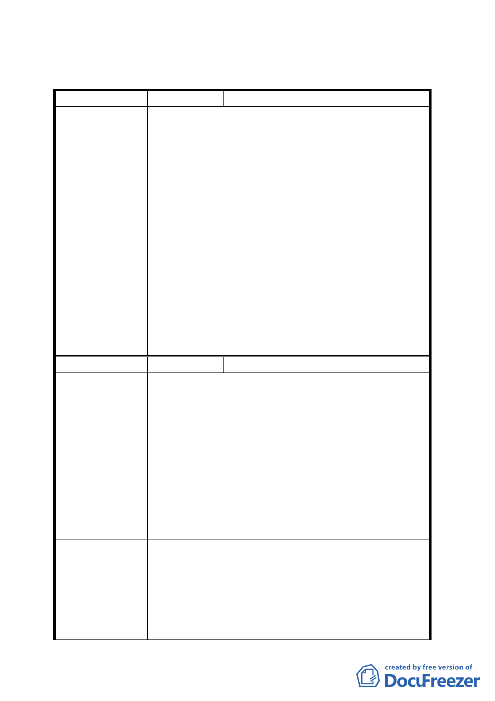

三、 公民團體所提意見審決如後附綜理表
臺北市都市計畫委員會公民或團體所提意見綜理表
編 號 １ 陳情人 中正區南門里郭有賢里長
植物園是南門里的寶地，市政府此次變更算是本里的福
氣，但計畫內容有不合理之處：
1.30 年前就劃設的道路，原可連通重慶南路和博愛
陳情理由
路，遲遲無法開闢，現在又把最重要的一段變更，
造成路網不流暢和原來道路規劃完成不符。
2.本里鄰近植物園多是名人故居、機要官邸及其他住
宅建地，消防救災安全格外重要；本案變更後，會
造成區域防災救難動線受阻。
生態維護雖然重要，但是本里防災和交通也同樣重要，
希望委員們能秉持都市規劃的專業，提出兼顧鄰里發展
建 議 辦 法 與生態保護的配套措施，否則本案在完全以生態導向的
護航下通過，實在有損本里居民財產安全與公眾通行的
機制。希望各位委員多聽聽我們小市民的心聲，苦民所
苦，南門里的居民將不勝感激。
委員會決議
本變更道路用地為公園用地案照案通過。
編 號 2 陳情人 潤泰創新國際股份有限公司
1. 本案原係民國六十九年考量地區交通流暢所擬定之
細部計畫道路，因遲未開闢而逐年植栽茂盛，今乃
基於維護生態及植物園之完整性理由，變更計畫範
圍道路用地為公園用地。
2. 本次雖屬市府美意，惟本案僅廢除原八米計畫道
陳 情 理 由 路，未考量原有完整之都市計畫街廓紋理及道路系
統，將使東南側八米計畫道路成為過長曩底路，形
成治安死角且無法發揮都市防災(防止延燒)救災
(救災動線)功能，並影響地區交通疏導，未通盤考
量即個案變更實不合理周延，不僅造成鄰地使用不
便，更影響一般民眾通行之公共利益與公共安全。
本公司總體考量地區交通、防災與社區紋理之完整都市
計畫層面，提出符合社會公益並兼顧地區紋理之建議。
建 議 辦 法 倘於 貴委員會採納下列事項之前提下，本公司乃勉予
接受本案道路用地之個案變更，希冀透過本案及建議方
案之整合，尋求社會最大公益。
建議事項：
-8-